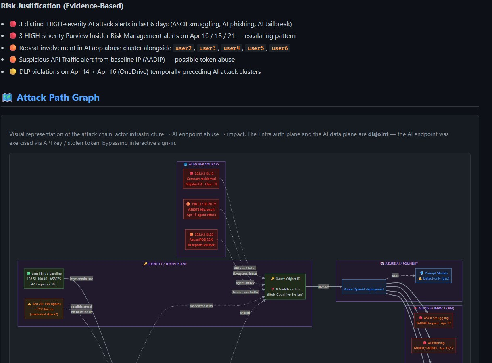
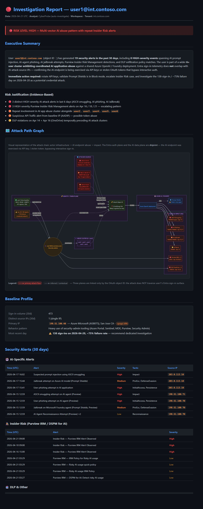

By Olivier Charron · April 2026 · #CyberSecurity #AI #SOC #MicrosoftSentinel #SecurityCopilot #MCP #DetectionAsCode
In a single afternoon I went from a raw AI-attack alert in Microsoft Sentinel to a codified, production-ready response playbook — without writing a single line of KQL or Python by hand.
The chain:
One analyst. Natural language. Full SOC lifecycle.
An Entra user with heavy security-admin privileges started receiving a burst of AI-targeted alerts over a 6-day window:
| Date | Alert | Severity |
|---|---|---|
| 2026-04-15 | AI Agent Reconnaissance Attempt Detected (Preview) | Low |
| 2026-04-15 | ASCII smuggling attempt detected on an AI agent (Preview) | High |
| 2026-04-15 | User phishing attempt detected on an AI agent (Preview) | High |
| 2026-04-15 | Jailbreak attempt on Microsoft Foundry agent blocked by Prompt Shields (Preview) | Medium |
| 2026-04-17 | Suspected prompt injection using ASCII smuggling detected | High |
| 2026-04-17 | Jailbreak attempt on Azure AI model deployment detected by Prompt Shields | Medium |
| 2026-04-17 | User phishing attempt detected in one of your AI applications | High |
| 2026-04-16 → 21 | 3× Purview IRM "Risky AI usage" + DLP "Restrict copilot by label" | Mixed |
Three attack vectors (ASCII smuggling, jailbreak, AI phishing) against the same user's Azure OpenAI deployment, with Purview Insider Risk backing it up. This was not an isolated alert — it was a campaign.
I opened VS Code in the CyberProbe repo and typed one line to GitHub Copilot:
"Auto-investigate the user with the most AI-attack alerts in the last 7 days."
Behind the scenes, CyberProbe chained these MCP servers automatically:
| MCP server | What it did |
|---|---|
| Microsoft Sentinel Data Lake | Queried 30-day SigninLogs baseline (473 sign-ins, 1 IP) |
| Defender XDR Triage | Pulled incident details, alert entities, MITRE mapping |
| Microsoft Graph | Resolved user profile, tenant context, OAuth object IDs |
| Microsoft Learn | Looked up current Prompt Shields & Purview DSPM docs |
CyberProbe's kql-auto-investigate skill ran the canonical 3-phase workflow: triage → deep-dive → correlation.
The key finding came out of Phase 2: the AI-attack source IP did not appear anywhere in the user's 30-day Entra sign-in history. That one fact collapsed the whole case. The AI API was being invoked outside the Entra authentication flow — meaning a stolen API key or exfiltrated session token, not a compromised user identity.
Phase 3 revealed the cluster: 6 users sharing the same OAuth object ID on the same Azure OpenAI deployment. It was a systemic abuse pattern, not a single user's problem.
kql-auto-investigate, showing the Phase 2 ai_api_bypass = True flag.
CyberProbe's report-generation skill produced a full HTML report with a dark-theme Mermaid attack-path diagram, MITRE mapping, IP enrichment tables, and a mandatory Methodology section citing every KQL query, every MCP tool, and every enrichment API.
📄 Read the full sanitized report:
investigation_user1_2026-04-21.html
📦 Machine-readable JSON:
investigation_user1_2026-04-21.json
🌐 IP enrichment:
ip_enrichment_6_ips_2026-04-21.json

With Security Copilot enabled in the tenant, I promoted the incident into a guided investigation. The embedded AI produced an executive summary, reframed the MITRE tactics into plain-English business risk, and suggested a prioritized response plan.
The E5 / E7 AI capacity benefits give customers monthly Security Copilot usage units that make this reasoning affordable at scale — no separate SKU negotiation required.
This is where the "AI for Security" layer earns its keep: not replacing the analyst's investigation, but compressing the time between raw findings and a decision an executive can sign off.
Here's the part that actually changed how I think about SOC work.
Microsoft recently shipped the Sentinel Playbook Generator (preview) — a Cline-based AI coding agent embedded directly in the Defender portal. You write natural language, it writes Python.
So I wrote a spec document for a playbook that reproduces what I had just done manually:
runHuntingQueryai_api_bypassI pasted the spec into the generator's Plan mode, reviewed the proposed flow diagram, approved, and switched to Act mode. The generator wrote the Python, the integration profile bindings, and the test harness. A single SOC ticket's worth of investigation is now reusable infrastructure.
Here's the part nobody talks about: the generator writes code. It doesn't tell you whether the code is safe.
So the spec includes a 14-item validation checklist grouped into five categories — Security · Reliability · Blast-radius · Observability · Regression. It treats every generated playbook as untrusted until proven otherwise. It's the same discipline you'd apply to a pull request from a new team member, except the "team member" is a language model.
💡 This checklist is generic — it applies to any playbook the generator produces, not just this one. Save it, reuse it, make it part of your SOC's code-review kit.
If AI-generated automation is going to earn a place in production SOCs, the trust boundary has to be explicit and testable. A checklist like this is the minimum viable contract.
┌─────────────┐ ┌──────────────┐ ┌─────────────┐ ┌──────────────┐
│ DETECT │ ──▶│ INVESTIGATE │ ──▶│ HUNT │ ──▶│ AUTOMATE │
│ │ │ │ │ │ │ │
│ Sentinel + │ │ VS Code + │ │ Copilot + │ │ Playbook │
│ Defender │ │ GitHub │ │ Security │ │ Generator │
│ XDR │ │ Copilot + │ │ Copilot E5 │ │ (Cline / │
│ │ │ MCP + │ │ │ │ Python / │
│ │ │ CyberProbe │ │ │ │ Natural Lang)│
└─────────────┘ └──────────────┘ └─────────────┘ └──────────────┘
▲ │
│ │
└──────── Back to detect (tune analytics from findings) ◀───┘
Every step is driven by natural language. Every artifact is reproducible. Every investigation becomes reusable automation — the core idea of detection-as-code extended to response-as-code.
Here's the honest part you need before trying this: the pipeline relies on multiple Microsoft surfaces, each with its own license. None of this is obscure, but it's worth naming explicitly.
| Capability | Required license / SKU | Notes |
|---|---|---|
| Microsoft Sentinel | Sentinel data ingestion (pay-as-you-go) OR included in Microsoft Defender / E5 bundles | Required for query_lake, analytic rules, automation rules, playbooks. |
| Microsoft Defender XDR | Microsoft 365 E5 / E5 Security / standalone Defender plans | Required for incidents, Advanced Hunting, response actions. |
| Defender for Cloud — AI Threat Protection | Defender CSPM + Defender for Cloud plan with AI threat protection add-on | Generates the Prompt Shields / ASCII smuggling / AI phishing alerts. |
| Purview DSPM for AI + Insider Risk Management | Microsoft 365 E5 Compliance / E5 Information Protection & Governance | Generates the "Risky AI usage" + IRM alerts used in the cluster correlation. |
| Microsoft Security Copilot | Security Compute Units (SCUs) standalone, OR monthly AI capacity benefits included with Microsoft 365 E5 / E7 (preview) | Enables embedded AI reasoning in Sentinel/Defender/Purview portals and the Playbook Generator. |
| Sentinel Playbook Generator (preview) | Security Copilot enabled + Sentinel Contributor RBAC + Entra "Detection Tuning" role | Limits: 100 playbooks/tenant, 5000 lines per playbook, 10-minute runtime, 8M tokens/day/tenant. Python only. |
| GitHub Copilot | GitHub Copilot Business or Enterprise | The IDE-side AI that drives CyberProbe investigations. |
| VS Code + MCP servers | Free (VS Code), individual MCPs free or self-hosted | mcp.json is shipped in the CyberProbe repo. |
| CyberProbe itself | MIT License, free, open-source | github.com/olchar/CyberProbe |
.vscode/mcp.json.kql-auto-investigate on one of your own AI-related alerts (or any incident).We used to talk about "closing the loop" from detection to response. With natural-language AI agents in the loop — at every layer — the loop closes itself.
Investigation becomes executable.
Response becomes reviewable code.
The SOC becomes a place where every incident makes the next incident faster.
That's the full circle. And it's here now.
#SOCAutomation #DetectionAsCode #PromptShields #DSPMforAI #PlaybookGenerator